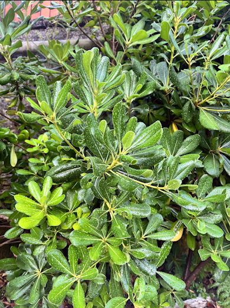
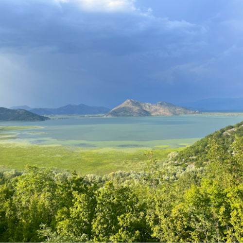

Hello! I'm Sam Henry, a travel writer and videographer from Gunnison, Colorado. Currently traveling the world!
Volunteering in Virpazar, Montenegro
08/1/2024
Today marks exactly one month since I’ve stepped foot in the country of Montenegro. While working part-time, I have been able to see and experience a lot. I should start by explaining how this opportunity came about. Back in January, I made a Workaway account, which gives you the freedom to create a personal profile and apply to posts that hosts all around the world put up. These posts consist of detailed job descriptions, offering room and board or sometimes a room and some cash in exchange for work. After a long process of applying and finding the right fit, I finally found my first Workaway. I chose to go with a company called Undiscovered Montenegro and would work at one of their three smaller companies, Villa Miela Lake Retreat. After a brief video interview, I was ready to buy a plane ticket and embark on my travels. After a long journey involving five flights, starting in Houston, Texas, I finally landed two days later in Podgorica, Montenegro.
The airport code is TGD, and the actual location of the airport is right outside Podgorica, in a place called Aerodrom. If you plan to fly here and want to stay on the cheaper side, there is a train that stops right at the airport. Walk about five minutes from the front doors, and you will see the train tracks with a designated train stop. For train times, go to zpcg.me; trains come about every hour but differ per stop.Since I’ve been here, I’ve only gone as far north as Podgorica and as far south as Bar. If you need to get to beaches such as Budva, you can take the train to Sutomore, the stop right before Bar, and then take a taxi to Budva. This will cost you about fifty euros and will take about forty to forty-five minutes, depending on traffic.
Luckily, our managers arranged a taxi for us with a driver who was a friend of the company, so he didn’t charge too much. The man was very nice and welcoming. Even though our flight was delayed, he waited a long time for us. Montenegrins are very straightforward people. I apologized many times for making him wait, but he cut me off, saying he was not mad and that there are good people and bad people in this world. He said I was good, so he was fine. I appreciated his generosity and favored his way of thinking.
After five flights in two days, your brain can kind of go to mush. It was nice having a talk with this man after touching down in a country I’d never been to before. We ended our conversation by trading gum. He offered me some menthol-flavored gum that I’d never seen before in the States. After this generous gift, I gave him a couple of sticks of my green Orbit fresh mint gum. He was excited to try it, and I told him I would come meet him in the North to possibly snowboard this year if there would be a good snowpack.
After getting out of the car and grabbing my giant, overbearing black backpack, I walked into the beautiful villa. Walking up to this place for the first time is pretty magical. With lush scenery, beautiful multicolored plants, and distant ominous mountains, I pushed the gentle welcoming gate, marching my American self into this new land. As I walked past the beautiful saltwater swimming pool overlooking the vast Montenegrin foothills, I was greeted by one of the sweetest, most loving Americans. We were greeted by an amazing lady named Mi. She was spending her week as a guest at Villa Miela. It was wild; she had one of the coolest names I’d ever heard in my life and lived in Malibu. I’d never met anyone from Malibu. She handed both me and my buddy a local beer and sat down for a great talk with us.
Later in the day, we were greeted by our new managers, Tobi and Adele. Tobi and Adele are two of the coolest managers I’ve ever had. They were volunteers just like myself and have perfected this hospitality job to a tee. We were provided a cool little cabin down the hill from the villa as our living quarters for our two month stay. The cabin is super cozy and has much character to it. The cabin comes with everything you need, water, a kitchenet, and a bed of course.
Our day-to-day work starts with an alarm going off at six fifteen every morning. I’m not out of bed until about six thirty-five after procrasting for awhile. After making a quick breakfast along with some hot coffee, I go out and water the plants. This villa has A LOT of plants. The job gets pretty satisfying and easier after each day of doing it. Other jobs consist of cleaning the villas, gardening, and cleaning the pool—not hard stuff. The rest of the time, we are offered a spot to join the guided tours, such as hiking, kayaking, and jumping in cool swimming holes. The cool thing about this job is we have become backup guides. Even though we need to run in the back of the group and have our fair share of responsibility we get to have fun with all of the guests in these awesome rual areas. Villa Miela provides the perfect experience for any adventurous person, all offered in one week. The drives for each tour are not long, as each tour takes place around Lake Skadar National Park. The lake is breathtaking from every direction. You can even see the Accursed Mountain range, part of the Balkan trail in Albania, from the main road in Virpazar.
Although the weather has been hot throughout the month we’ve been here, that hasn’t stopped my buddy and me from getting outside and exploring. For food, everything has been very affordable and cheap. The closest place to get groceries is a supermarket called Voli, right down the street at the front of Virpazar. It’s a smaller version of the bigger ones, with not too much offered. They have a whole aisle dedicated to sweets, believe it or not. A small produce section, a small deli market, and other tasty treats. Each new group of guests gets me very excited for the following weeks. Getting to meet new people and form amazing new experiences and connections makes me so happy to work this job in such a cool area. Virpazar, Montenegro, is a very cool niche town in the quaint mountainside of the Montenegrin hills, perfect for an exotic new trip to somewhere new an exciting!
Maturing In Europe
07/20/2024
The year is 2024, and I am twenty-three years old. Twenty-three is a good chunk of time. It’s an amount of time that can affect a person immensely. When I was younger, I was taught the fundamental rules of respect and how to become a true gentleman. Not a lot of kids today are introduced to these kinds of roots. These formal teachings have been embedded in my brain and have helped my teenage self resist whittling my way down the wrong paths presented to me at every corner. On the micro front, they have helped me, projecting themselves as a form of an angel on my shoulder (my self-conscience). While nothing can be perfect in this world, there is always the macro that can have an effect, blurring that angel on the shoulder and making way for a long line of bad decisions. As humans, we feel we owe ourselves a reward for doing work, like we are dogs that deserve a treat after being told to sit and lie down. Earning a wage, having to pay bills, and having that extra left-over amount to save and spend on something that can pleasure “you”: addiction. Most humans in this world feel like they should be able to drink a beer or a nicely prepared mixed drink with sparkling ice cubes, maybe with a lime on the rim.
These things can be nice, but as time goes on, the nice, appreciated quality of these drinks enjoyed after a hard day’s work turns into a quantity trying to fill something. This turns into an unmotivated problem. I believe this is the start of what I’d like to call “throwing yourself into the hole.” Becoming too distracted by what is around you and wanting to settle into a routine. Being stuck in “the hole” is becoming too comfortable and too reliant on people or things. Not wanting to take that extra step to change your way of living or asking for as much help as you can along the way. Blurred to the ideals you’ve learned in the past. Not doing things correctly, becoming clumsy, and hurting others without knowing it. Not giving yourself time to think, rushing to get to places, or doing nothing at all. Letting every day go by while you are sucked away from reality, peacefully dissociated, floating in space. No goals. No motivation. No responsibility.
When I was around eleven or twelve, I was in my fifth-grade class at a Christian school that my parents had placed me in—a newly moved Tennessee boy trying his best to make new friends in the southern state of Texas. I remember something that sparked my interest. I remember looking at a map and finding out about a part of the world called Scandinavia, where some of the most scenic, most beautiful countries were folded and pushed upright from one another, forming into some of the most beautiful countries in the world. I remember one, in particular, caught my attention: Sweden. I couldn’t tell you what was so appealing about it—maybe it was the cool flag, the mountains, or maybe the beautiful blue-eyed, blonde-haired women that roamed the countryside—but my little eleven-year-old brain couldn’t comprehend that yet. I knew I had to make it over there sometime in my life. I started doing all of my middle school geography projects on it.
Every chance I got to look up a country and do a research project, I had my bread and butter. I was a natural-born Scandinavian, ready to board the Viking ship, ready to leave the Gulf of Mexico and set sail. Over the coming weeks of fifth grade, I knew I had to expand my knowledge of countries and pick something new. As I gazed around the map, it seemed that my eyes were only fixed on the northern region. My second choice was Iceland. I loved seeing that there was a secretive island packed with enough land for a lifetime of adventure awaiting exploration. This was my second obsession. Iceland overtook my fanboy era of Scandinavia real quick! I continued to be Iceland’s number one fan all the way up until graduation, giving myself the courage to ask my parents for a plane ticket for completing high school. Their very generous act pushed me into embarking on a once-in-a-lifetime trip to the land of fire and ice. My brother and I thought it would be the coolest idea if we rented a car and drove the complete perimeter of the island in the seven days that we were there.
At this time, I had just broken up with my first girlfriend ever and was on the hush-hush about it. This healing trip turned into an unforgettable experience, bringing my brother and me very close. Being able to see a new culture while talking through a recent hard experience blended so well that it healed the soul. Many years from that point, I was about to accomplish one of my biggest goals yet: graduating college. College had taught me many things, from punctuality to working hard toward something you care about and problem-solving your way through difficult moments. College is also tied with partying and making fun, drunken memories. This turned into four years of having a lot of fun but also turned into myself fighting addiction while not realizing it all the way through. I became too comfortable, not taking a second to think about things, and made the sad excuse over and over again, saying that I was too busy for it, letting my leisure time overcome all my time.
During my last two years of college, I dated a lovely girl who I still have so much love for. She is a permanent part of my family and someone that has helped shape my future. Although I refused to fully think about what she had helped teach me in the moment, later on, it became a lot more helpful and problematic for me. With the great weight bearing upon my shoulders from college, I felt I never got a moment to sit and truly think. In my spare alone time, I felt I always needed to spend time around people. Once I parted ways with this girl, I self-destructed for a day. Full leisure, no responsibility, and I felt like I was truly free (in my head). After one day, I finally got that moment of being alone again. But this time, it was different. I felt sick and tired of it. It was a waste to feel that way, and the hole was looking a little darker and a little more uncomfortable than it used to. I wanted to see how I could enter a new stage of my life. Having set goals like high school and college that are these longtime achievements in my life, I was at a point where I had no more long-term achievements. I was at the end of the road. Do I want to sit in this hole when I have nothing else better to do? I refused these accusations my mind had been telling me and set out on a road to maturity.
I moved to Texas for one month before embarking on a new trip abroad. I took this month to give back to myself, take time to think, and reflect on my wrongdoings. I would stretch every morning and every night. I made it a goal to read out of my book every night, limited my phone usage, and wrote in my journal to keep track of my internal journey. This might be hard for someone to start and keep up with, but after ten days, you find yourself running in routine. A good routine. I was healthy, I was happy, and I was growing. I took my free time to get out in nature, go biking, and walk through anything that was bothering me. I spent more time by myself and gained new literature to feed my brain power. As the month came to an end, I was a couple of days away from leaving for a country I had only learned about a couple of months prior. I was moving to Montenegro, going to work for a resort nearly for free. I would get a place to stay and get paid 250 euros a month. This was more than enough due to the low cost of living in this country. I was grateful, happy, and excited. Before leaving, I had reached a new level of friendship with both of my parents, having some of the most honest conversations I’ve ever had with them. For the first time in my life, I was able to help them gain a new perspective rather than the other way around. I was able to sit, think, and create my own wisdom for once.
Before leaving, I had finished listening to Dave Grohl’s audiobook The Storyteller, where he talked about his thought that becoming a true man was accepting responsibility through and through. That resonated with me, and I wanted to reach that level of maturity. Even though I was going to make nothing at this job in Montenegro, I wanted to do the best job I could to prove to myself what true responsibility is, along with a quote that runs through my head every day: “Everything worth doing is worth doing right.” Even when working for free, everything you do should have thought put into it, along with at least a little bit of effort, shying away from laziness, because there is always time. If the job you are doing isn’t up to the standards of what your boss wants, try again and put more effort into it. If this comes across as annoying, be able to take some constructive criticism. I’m not a kid anymore, and these things shouldn’t make me mad. A man can take criticism, do his work, and not complain about a damn thing.
Knowing that I live in such a rural, breathtaking, beautiful area, I am eternally grateful for the time I have here to live and grow. As I continue this path of self-growth, I am making my way to a new country soon that I’ve always wanted to see. I will be moving to Bouzerat, France, living in a twenty-person village in the French countryside a couple of hours outside Lyon. I’m taking this next month to enjoy my last four weeks in this beautiful Balkan area and to study the French language to further my knowledge and become ready for the cultural immersion I will soon be a part of.
I believe this is the best way someone can mature at such a time in one’s life. Being able to work, observe, think, and breathe. Work somewhere new that can bring you some type of special experience. Observe that experience; don’t just let the time slip away. Take your free time to think about problems you’ve had in the past that you can work on or accept, and finally, take time to breathe and really be in the presence of the moment. My name is Sam Henry. I am twenty-three years old, and I believe I’ve lived a lot within that window of time. But this is only the beginning of a road of learning.
Videos
Biking From Montenegro to Albania
I took the train from Virpazar, Montenegro to Podgorica station.
Biked from the train station to Honi i Hotit, Albania and back!
The whole trip was 26 miles and was an amazing breathtaking adventure!
Moving To Montenegro
I created this video a month before moving my whole life across the world!
With the help of my friend Ethan, two cameras, and portable mic we created something special!
First Week In Montenegro
Me and my buddy Will spend our first week in this beautiful Balkan area.
Getting used to routine as well as exploring this mysterious new country!
Torn Ligaments: Matt Harris's Road To Recovery
Before leaving over seas I was about to graduate college. One of my senior projects was created a production.
I wanted to capture a feat of someone I knew. I decided to make a movie about my good buddy Matt Harris.
Overcoming multiple surgeries on tearing his ACL and Meniscus.
This is his road to recover!
A Look Into My Life
This production is one of my first ever.
Due to how it shows a breif history of myself.
Serves as a good introduction to understanding who I am as a person!
Montenegro üá≤üá™
Tuzi, Montenegro
Vranjina Monasterie, Lake Skadar, Montenegro
Haj Nehaj, Bar, Montenegro
Murići Beach, Godinje, Montenegro

Villa Miela, Montenegro
Pavlova Strana Viewpoint, Montenegro
Haj Nehaj, Bar, Montenegro
Villa Miela, Montenegro
Villa Miela, Montenegro
Virpazar, Montenegro

Godinje, Montenegro
Bar, Montenegro
Lake Skadar, Montenegro
2 miles from Montenegro and Albanian Border Crossingo
Virpazar, Montenegro
Lake Skadar, Virpazar, Montenegro
About Me!
Welcome to my website! My name is Sam Henry, and I am a recent graduate of Western Colorado University. I’ve earned a bachelor's degree in strategic communications, along with a minor in business administration. Over the last couple of years, I’ve discovered a lot about myself and found things I am truly passionate about. Towards the end of my studies at Western, my degree focused more on the production side of things, diving deep into filmmaking. This included analyzing films, learning to use a camera properly, and spending way too much time on a computer learning to edit—often wanting to punch the screen in frustration. Through my program, I had the chance to learn from so many amazing professors who truly pushed me to want to do more of these types of projects. I was becoming so passionate that I was doing productions in my own time that had no ties with any school assignments.
In the final months of my last semester of college, I signed up with an organization called Workaway. Workaway gave me the chance to message hosts from all around the world offering cool, specific, niche positions. These positions range from babysitting to working at a resort to working for a summer camp. There are so many to choose from. After tirelessly spending those last couple of months trying to get my first opportunity, I was accepted by about six hosts, with only two that wanted to have a video interview with me. The video interview made me feel a lot safer about the process and felt like I was actually applying for a job. Ultimately, it came down to a choice between a job in Hawaii, where I would be helping with a renovation project, or working for a holiday resort as a backup guide in Montenegro. I bet you can guess which one I chose! I’ve spent the last six weeks working for Villa Miela Lakeside Retreat in the beautiful Virpazar, Montenegro, and it has been a life-changing experience for me. I have fallen head over heels for this small, quaint place and want to continue making treasured memories here.
Since my arrival, I’ve done a lot of self-reflection along with a lot of reading. Over the past year, I’ve been reading a lot of Jon Krakauer, by far my favorite author of all time. Through his words, I’ve become more and more motivated and passionate about traveling. I can honestly say that the persistence he has inspired in me has made me want to write! I want to capture what I see and what I will be doing for the next year of my life. This is an amazing time in my life where the road is wide open, and the opportunities are endless. I want to keep traveling, I want to keep making these productions, and I want to write to share my perspective on my new experiences. I am making my way through Europe, and I’m loving my life.